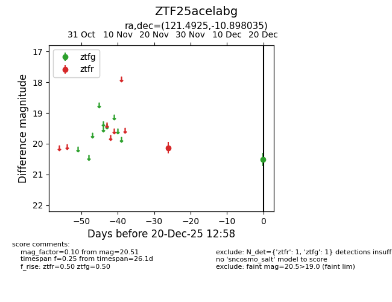
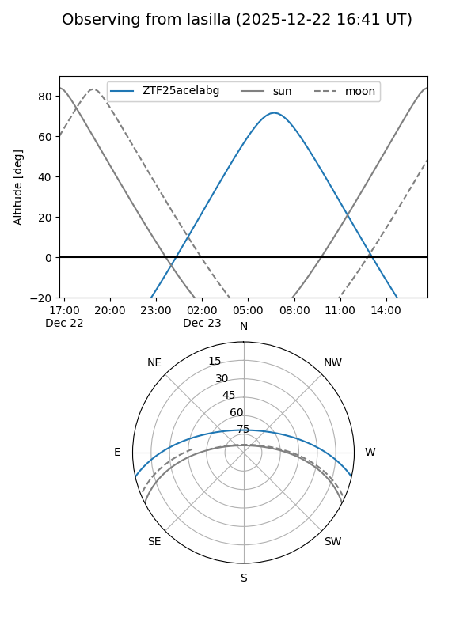
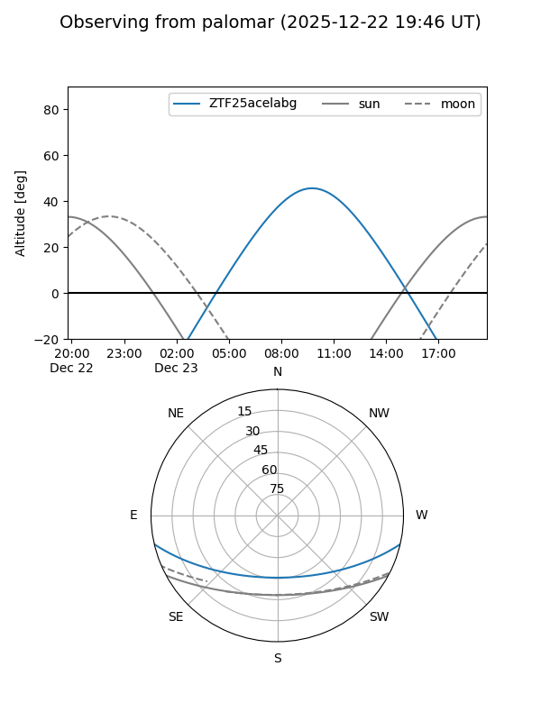

ZTF25acelabg
Target ZTF25acelabg at 2025-12-22 14:03
Aliases and brokers:
FINK: fink-portal.org/ZTF25acelabg
Lasair: lasair-ztf.lsst.ac.uk/objects/ZTF25acelabg
ALeRCE: alerce.online/object/ZTF25acelabg
alt names
ZTF25acelabg (ztf,fink_ztf)
Coordinates:
equatorial (ra, dec) = 121.4925,-10.89803
equatorial (HMS+DMS) = 08:05:58.20,-10:53:52.92
galactic (l, b) = (231.4311,+11.12899)
Flags:
Photometry:
last ztfg=20.51, ztfr=20.13
1 ztfg, 1 ztfr detections
Lightcurve

Visibility


Additional plots